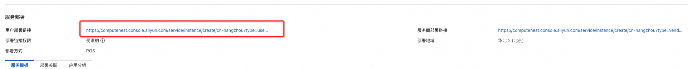

服务模板说明文档
服务说明
本文介绍容器服务部署mysql实现托管版多租户的流程，本示例对应的Git仓库地址为：mysql-managed-ack-demo。
根据该服务模板构建的服务默认包含三种套餐：
| 套餐名 | 副本数 | 数据卷容量 |
|---|---|---|
| 低配版 | 1 | ESSD云盘 20GiB PL0 |
| 基础版 | 2 | ESSD云盘 40GiB PL0 |
| 高配版 | 2 | ESSD云盘 80GiB PL0 |
本示例创建过程大约持续1分钟，当服务变成待提交后构建成功。
服务使用前提准备
本示例需要提前准备容器集群，集群类型支持ACK、ACS等类型。推荐使用基础资源配置服务，进行基础资源一键配置。
服务架构
本部署架构为容器集群多租户部署，架构如下图所示： 1. 使用ingress根据域名路由到各个租户的mysql 2. 每个租户一个k8s namespace，用namespace隔离 3. mysql使用yaml部署

服务构建计费说明
测试本服务构建无需任何费用，创建服务实例涉及的费用参考下文"服务实例计费说明"。
服务实例计费说明
测试本服务在计算巢上的费用主要涉及：
- 导入的容器集群的费用
- 在容器集群新建的磁盘、网络等费用
服务实例部署流程
部署步骤
- 部署链接 
- 单击部署链接，进入服务实例部署界面，根据界面提示，填写参数完成部署

- 参数填写完成后可以看到对应询价明细，确认参数后点击下一步：确认订单
- 确认订单完成后同意服务协议并点击立即创建
进入待部署阶段。

- 在用户侧进入待部署状态后需要服务商同意用户的部署

- 等待部署完成后就可以开始使用服务，通过Endpoint即可访问mysql

- 部署成功后，用户侧和服务商都可以在控制台查看监控大盘
用户侧：

- 用户可根据自己的需求修改mysql的配置参数，进入实例详情，点击修改参数：
修改完成后，点击保存，大致需要耗时1分钟左右
 修改完成后如下图所示
修改完成后如下图所示

更多功能
计量计费
服务配置
© 2009-2022 Aliyun.com 版权所有